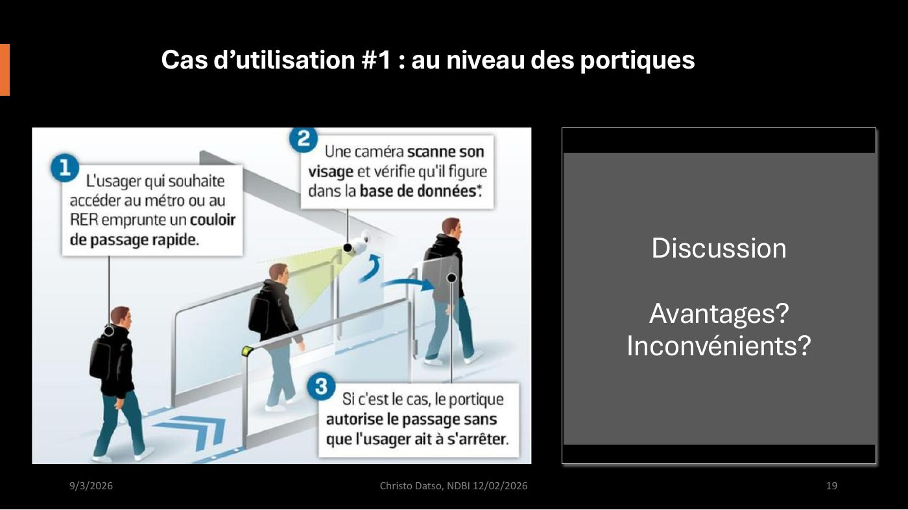
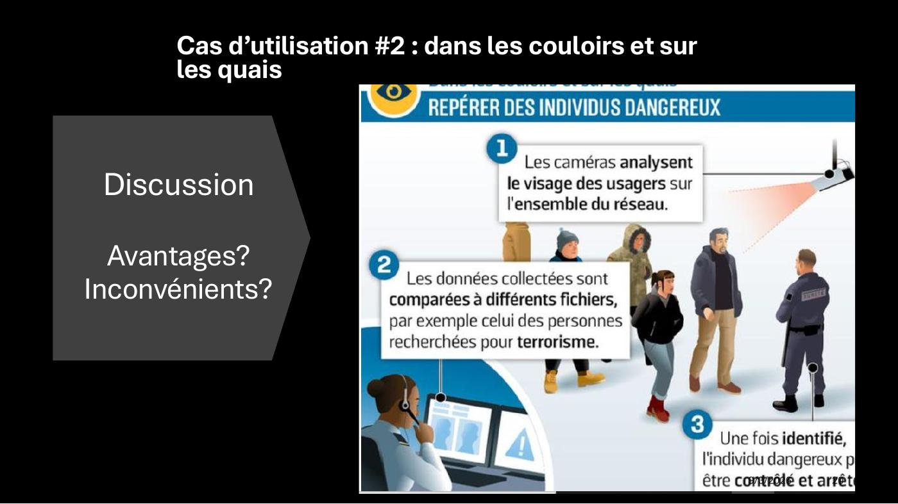

DIAPOSITIVES 15 à 20
Un même dispositif, deux emplacements — et tout change.
La deuxième partie s’ouvre sur une promesse de méthode : « une situation identique, trois “lunettes” éthiques ». Avant de discuter des cadres, il faut un cas — et l’exposé en prend un très concret.
Trois affirmations sont soumises à la salle. D’accord / pas d’accord / neutre, à main levée :
Les trois énoncés ne sont pas choisis au hasard : chacun est le résumé d’une des trois positions éthiques que la fiche 8 déploiera. Le premier est utilitariste, le deuxième conséquentialiste appliqué à la sécurité, le troisième est le point exact où la déontologie refuse de suivre. La salle se répartit avant de savoir dans quoi elle se répartit.
L’exposé part d’un article du Parisien du 20 février 2019 : Valérie Pécresse, présidente d’Île-de-France Mobilités, souhaite « expérimenter la reconnaissance faciale dans les transports d’Île-de-France ».
Ses arguments, tels que l’article les rapporte : « Il n’y a pas de raison qu’il y ait des degrés de protection différents entre les avions et les trains. Et le fait qu’un terroriste recherché puisse passer devant les caméras sans être empêché de prendre le métro me paraît une source d’insécurité. » Et, du vice-président chargé de la sécurité : « C’est une question de volonté politique, car la technique est là. Cela existe déjà dans des pays comme Israël ou la Chine. »
L’opposition du Front de gauche répond : « Dans les aéroports, on vérifie que le passeport correspond à la personne. Mais dans le métro, c’est une surveillance de la population. On ne peut pas le faire dans un pays démocratique. » Et : « Qui nous garantira que ça ne sera pas utilisé pour d’autres motifs ? Par exemple pour suivre des Gilets jaunes qui vont manifester ? »
La CNIL a déjà averti que « les enjeux de protection des données et les risques d’atteintes aux libertés individuelles sont considérables ».
La phrase du vice-président — la technique est là, c’est une question de volonté politique — est involontairement la meilleure réponse à la question de la fiche 4. Le risque n’est pas technique : la technique est disponible et l’arbitrage est ailleurs.

Les paramètres techniques du cas, tels que l’article les détaille : dans une première hypothèse, l’usager pose son passe et la caméra vérifie que la personne filmée correspond à la photo de l’abonnement — « c’est une question de sécurité, on ne laisse entrer que ceux qui sont autorisés ; par contre le flux n’est pas forcément amélioré ». Dans la seconde, on supprime complètement le passe : l’usager, ayant accepté que sa photo soit intégrée à une base, présente son visage. « Ce dispositif pourrait augmenter la fluidité et limiter la fraude. » Les voyageurs qui refusent prennent un portique classique.
Deux repères chiffrés que l’exposé conserve : dans les aéroports parisiens, la reconnaissance faciale a remplacé les empreintes digitales — 10 à 15 secondes au lieu de plus de 30, soit 4 % de passagers supplémentaires accueillis sans attente insoutenable. Et à Châtelet, la RATP teste 458 caméras intelligentes qui ne reconnaissent pas les individus mais repèrent des « situations anormales » : les résultats « ne semblent pas encore être à la hauteur des attentes » — dans les zones de forte affluence, elles peinent à distinguer un colis suspect d’un bagage abandonné.

C’est le même matériel. Ce qui change tient en deux mots : au portique, on vérifie une personne qui se présente contre sa propre référence, avec son accord et pour entrer ; dans le couloir, on compare tout le monde contre un fichier de tiers, sans accord et pour repérer. Le premier est une authentification, le second une identification de masse.
Un obstacle technique est signalé, et il vaut d’être noté : pour le cas no 2, il faudrait « d’abord modifier la législation », créer une base de photos des personnes recherchées et la connecter aux caméras. Le directeur de l’Innovation Lab d’Idemia estime que « le projet est voué à l’échec dans l’état actuel de l’infrastructure du métro ». En 2019.
C’est là-dessus que la salle est invitée à se prononcer — et la fiche suivante montre ce qu’il en est advenu, sept ans plus tard, en Belgique.